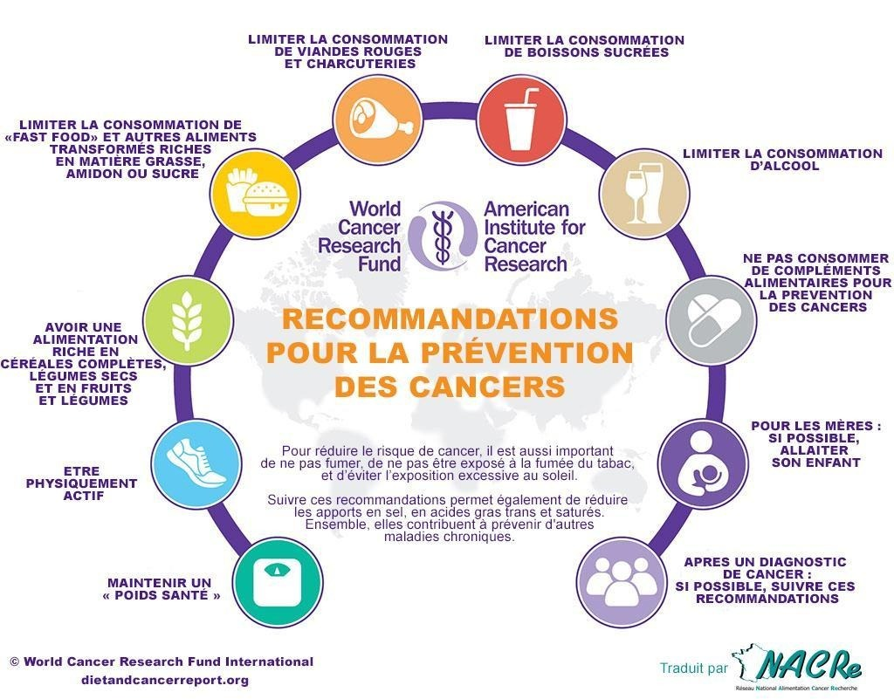

Séquelles après traitement
Toutes les patientes devront avoir accès à un résumé de leur traitement et plan de suivi.
Le médecin référent externe et l’équipe d’oncologie devront être en lien pour les soins post-traitement. Il est recommandé que les cliniciens encouragent l'inclusion de l’entourage des patients (conjoints, famille) dans le suivi des patientes.
De façon systématique, la consultation de suivi a pour objet de :
- Evaluer effets physiques et psychosociaux à long terme du cancer du sein et des traitements
- Faire la promotion de la santé par la nutrition et l’hygiène de vie
- Promouvoir le retour à l’emploi
Évaluation effets physiques et psychosociaux à long terme du cancer du sein et des traitements
Au cours de la consultation de suivi, les domaines cliniques suivants doivent être adressés avec les patientes :
Promotion de la santé par la nutrition et l’hygiène de vie
Les principales recommandations sont résumées ci-dessous.

Chez les femmes traitées pour un cancer du sein, la prise de poids au décours du traitement (chimiothérapie ou hormonothérapie) est fréquente. Elle concerne près d’une patiente sur deux.
C’est pourquoi, il est important d'inciter les patientes à maintenir leurs poids pendant et après le traitement et ceci passe par un comportement nutritionnel adapté (entre autres : au moins cinq fruits et légumes par jour, céréales complètes et légumes secs au moins deux fois par semaine), et la pratique d’une activité physique adaptée.
Les patientes devront viser au moins 150 minutes/semaine d’exercice aérobie d’intensité modérée ou au moins 75 minutes/semaine d’aérobie d’intensité vigoureuse et lutter contre la sédentarité (Recommandation OMS).
Outre les bénéfices cliniques précédemment cités retrouvés pendant les traitements, l'activité physique réduit le risque de récidive de 43 % du cancer du sein, de 34 % le risque de décès par cancer et de 41 % le risque de décès toute cause confondue après un cancer du sein (Ibrahim et al, Med Oncol. 2011)
Depuis décembre 2020, il est possible de prescrire un ensemble de bilans et de consultations aux patients bénéficiant d’une ALD dans le cadre de leur parcours de soins global après le traitement d’un cancer. Ce parcours comprend un bilan fonctionnel et motivationnel d’activité physique adapté (APA), pouvant donner lieu à l’élaboration d’un projet d’activité physique adaptée, mais également un bilan nutritionnel et des consultations de suivi nutritionnel.
Enfin, on rappelle que la prise de compléments alimentaires n'est pas recommandée, que ce soit pendant ou après les traitements, tout comme la pratique d'un jeûne thérapeutique ou tout régime restrictif.
En plus de limiter la consommation d'alcool, une aide au sevrage tabagique est à proposer systématiquement.
Les vaccinations devront être actualisées sur orientation du médecin réfèrent. Les programmes de dépistage des deuxièmes cancers devront être poursuivis.
Référence :
Ibrahim EM, Al-Homaidh A. Physical activity and survival after breast cancer diagnosis: meta-analysis of published studies. Med Oncol. 2011 Sep;28(3):753-65. doi: 10.1007/s12032-010-9536-x. Epub 2010 Apr 22. PMID: 20411366.
Retour à l’emploi
Après cancer du sein, les patientes doivent être dirigées vers le service de médecine du travail et le retour au travail évalué en visite de pré-reprise.
Dans l’étude CANTO, 2 ans après le diagnostic :
- 21 % des femmes ne sont pas retournées au travail. Parmi les femmes travaillant à temps plein au moment du diagnostic, 23,6 % sont passées à temps partiel.
- Facteurs de risque de non-retour au travail : (traitement par hormonothérapie en cours ?), symptômes physiques et émotionnels.
Principaux types d’interventions testées sont : psycho-éducation, activité physique, réinsertion professionnelle, avec une approche multidisciplinaire. Les interventions multidisciplinaires semblent plus efficaces mais peu d’essais cliniques randomisés, complexité des déterminants du retour au travail. Au final, nécessité d’études complémentaires.
Il faut étudier la pertinence d’un statut de reconnaissance en qualité de travailleur handicapé (Dossier RQTH) qui permet d’éviter un licenciement économique ou d’accéder à la formation professionnelle en cas de projet de reclassement professionnel.
Références :
de Boer MR, Waterlander WE, Kuijper LD, Steenhuis IH, Twisk JW. Testing for baseline differences in randomized controlled trials: an unhealthy research behavior that is hard to eradicate. Int J Behav Nutr Phys Act. 2015 Jan 24;12:4. doi: 10.1186/s12966-015-0162-z. PMID: 25616598; PMCID: PMC4310023.
Lamore, K., Dubois, T., Rothe, U., Leonardi, M., Girard, I., Manuwald, U., Nazarov, S., Silvaggi, F., Guastafierro, E., Scaratti, C., Breton, T., & Foucaud, J. (2019). Return to Work Interventions for Cancer Survivors: A Systematic Review and a Methodological Critique. International Journal of Environmental Research and Public Health, 16(8), 1343.
Hoving JL, Broekhuizen ML, Frings-Dresen MH. Return to work of breast cancer survivors: a systematic review of intervention studies. BMC Cancer. 2009 Apr 21;9:117. doi: 10.1186/1471-2407-9-117. PMID: 19383123; PMCID: PMC2678275.
Sanft T, Denlinger CS, Armenian S, Baker KS, Broderick G, Demark-Wahnefried W, Friedman DL, Goldman M, Hudson M, Khakpour N, Koura D, Lally RM, Langbaum TS, McDonough AL, Melisko M, Mooney K, Moore HCF, Moslehi JJ, O'Connor T, Overholser L, Paskett ED, Peterson L, Pirl W, Rodriguez MA, Ruddy KJ, Smith S, Syrjala KL, Tevaarwerk A, Urba SG, Zee P, McMillian NR, Freedman-Cass DA. NCCN Guidelines Insights: Survivorship, Version 2.2019. J Natl Compr Canc Netw. 2019 Jul 1;17(7):784-794. doi: 10.6004/jnccn.2019.0034. PMID: 31319383; PMCID: PMC7094216.
Dumas 2020
Recommandations ASCO “Survivorship care” 2016,
Recommandations NCCN survivorship 2020).